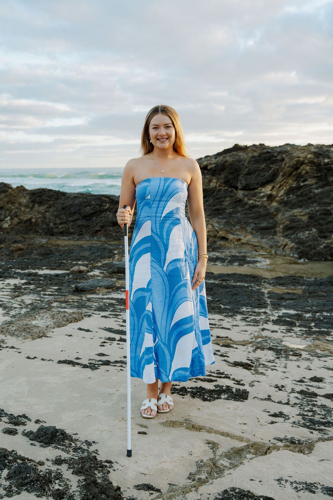
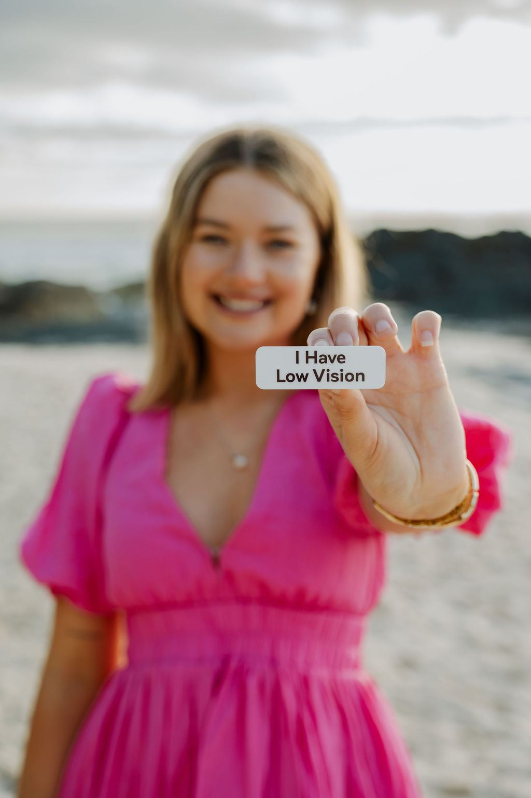
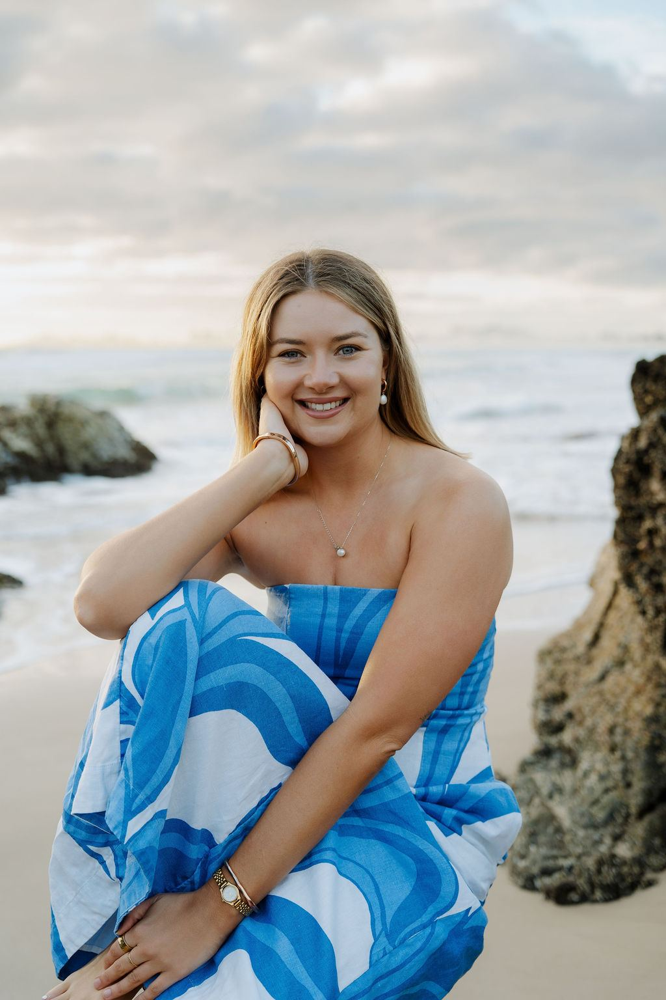
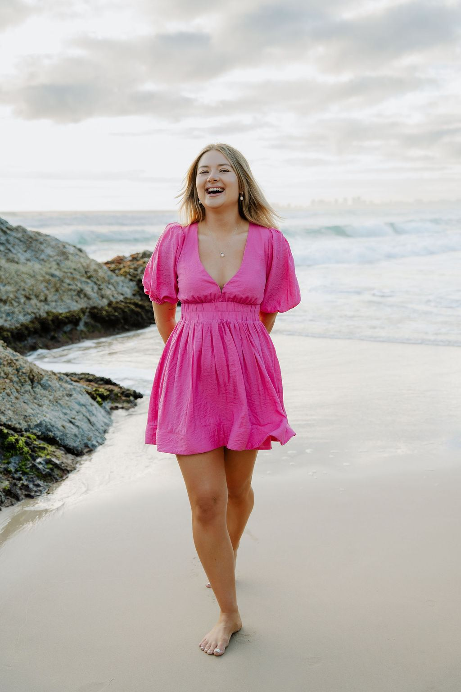
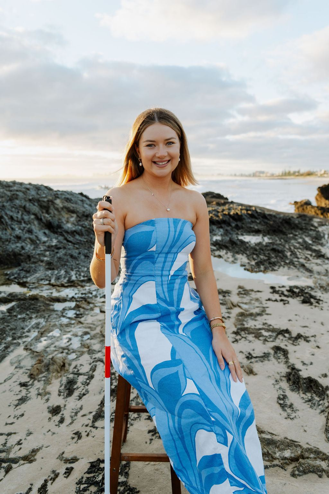
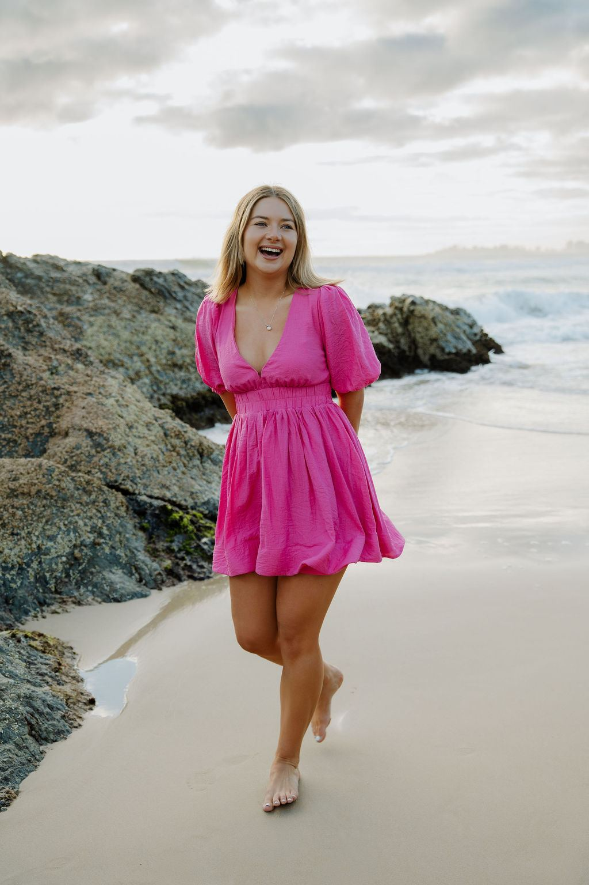
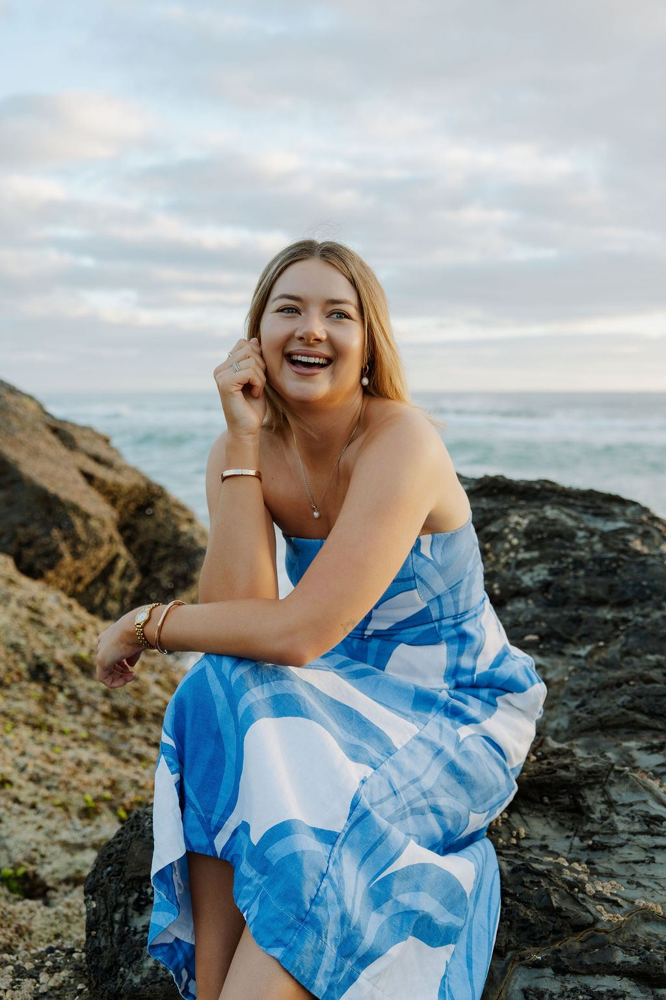
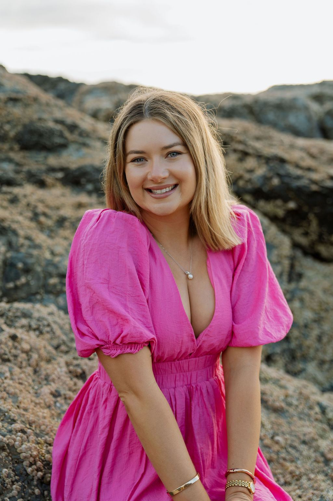

About me
My story
I didn’t always believe in myself. In fact, for a long time, I thought I wasn’t capable, good enough or ‘normal’ enough to do the things I dreamed of.
Living with low vision has taught me that the greatest barriers we face aren’t always physical. They’re the beliefs we hold about ourselves.

My journey so far
-
Growing up
Born with 30% vision and told what I couldn’t do
-
At 16
Told I would never be able to drive
-
Rock bottom
Housebound and stuck in ‘I can’t’
-
The turning point
A solo snow season in New Zealand
-
Since then
Graduated with a Bachelor of Social Welfare
-
Today
Sharing my story with audiences across Australia
My diagnosis
“I was stuck in the narrative of ‘I can’t’.”
I was born with only 30% total vision and am legally blind in one eye. My condition is nameless, and how it happened remains unclear. Having such low vision limits my ability to read, navigate spaces and function.
Having a disability, I spent my early years hearing what I couldn’t or shouldn’t do. So I developed negative beliefs about myself and my capabilities, which I carried throughout my life.
These beliefs kept me stuck, never trying to achieve goals. I became a victim to my condition and my mindset. I developed such fierce anxiety growing up, as the world seemed like such a scary place for someone like me. It was too overwhelming to go anywhere on my own; I always needed people to help me complete every task.
Or so I thought. But this couldn’t be further from the truth.

Rock bottom
“I became housebound and eventually hit rock bottom.”
Growing up, I was embarrassed of my disability, so I never spoke about it. I hid this part of myself away. If my condition was ever made obvious I would break down, as I couldn’t stand being ‘different’.
At the age of 16, I was told I would never be able to drive a car. This broke me. I lost my independence, and once again I couldn’t do something. It fed my negative beliefs about myself, proving them true.
I continued living my life through a negative lens, so consumed by what I didn’t have or couldn’t do. I became housebound and eventually hit rock bottom.

A life-changing decision
“To change your life, you must first identify your negative beliefs, then challenge them to prove them wrong. This will set you free.”
The turning point
A solo snow season in New Zealand
I needed to change my life, urgently. After getting myself into therapy and studying the mind, I discovered that statement, and it became how I was going to change my life.
A few weeks later I found myself travelling to New Zealand for a solo snow season. New Zealand changed my life. I challenged myself and my mindset daily. I learnt to snowboard, cook, clean, make friends, navigate a new town, use public transport and live independently, and this changed me.
I realised I am capable and good enough.

Motivational speaking
“The most confident version of myself, unstoppable even!”
My condition has always remained the same, but my mindset changed. Therefore I changed, and my life changed.
Since that trip, I have graduated from university with a Bachelor of Social Welfare, travelled the world and learnt new skills. When I ran my first half marathon with only 30% vision, I realised something powerful: our limits are rarely as fixed as we think they are.
I started a business to share my discoveries and help others realise their own potential and overcome their negative beliefs. Today I am a confidence and mindset motivational speaker, and I host events to help others ignite their fire. Everyone has the power within themselves; they just don’t realise it yet.

Community and content
Bringing people together
I founded She’s Social, a women’s community social group on the Gold Coast built on connection, authenticity and fun. Living with low vision myself, I know how important it is to feel safe and included. We meet for walks every Sunday at 7am and Wednesday at 5pm (QLD time) at Alia Cafe in Coolangatta, plus social nights and monthly events, from lawn bowls to dance class.
Online, I share daily life with low vision: vlogs and challenges to build confidence and self-belief, plus golf, ocean adventures, cooking and makeup. The Courier-Mail even called me a ‘Qld TikTok queen’.



Ready to ignite your fire?
Bring Chanelle’s story to your school, workplace, conference or community event.